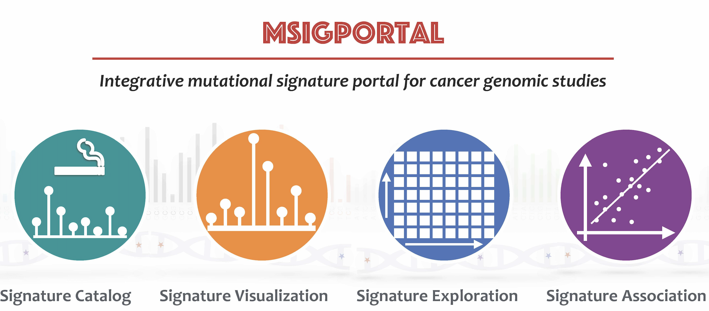
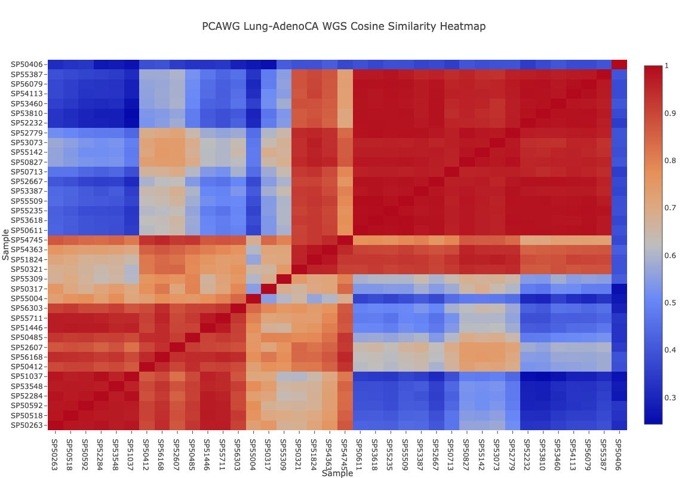
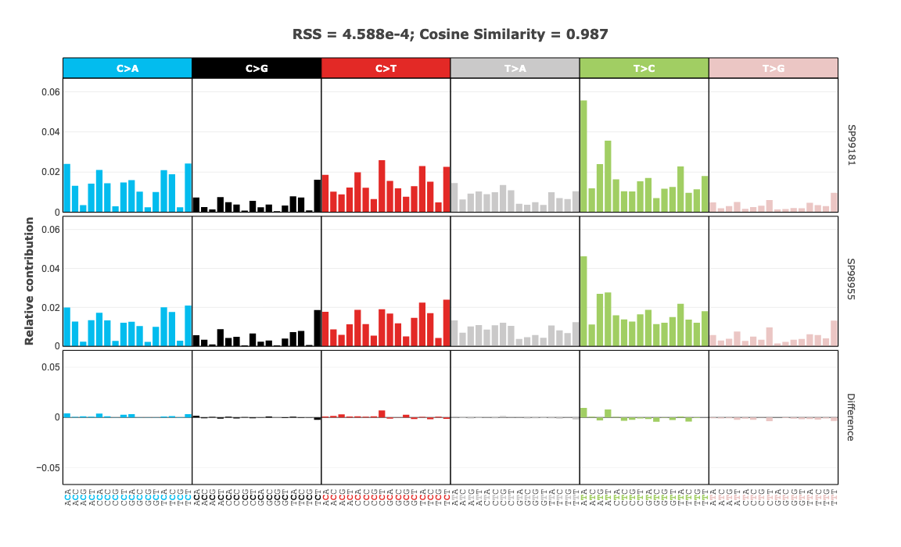
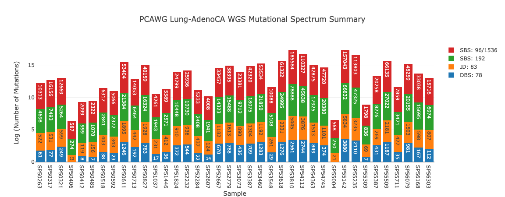

Known-signature QC
Load count-scale mSigPortal spectra, fit COSMIC signatures, and inspect burden, reconstruction, and residuals.
Run notebookBrowser-first mutational signature analysis
mSigSDK is a JavaScript module for mutational signature data access, validation, fitting, QC, uncertainty analysis, exploratory NMF, reports, and browser-rendered figures. This page is a working entry point for reviewers and new users, not a brochure.
Executable examples
Each notebook opens in a static GitHub Pages runner. Users can read the narrative, see the JavaScript cells, edit code in the browser, and rerun the notebook against the hosted SDK. The gallery follows a researcher workflow from orientation and input setup through fitting, reliability checks, reporting, interoperability, and advanced workflows.
Load count-scale mSigPortal spectra, fit COSMIC signatures, and inspect burden, reconstruction, and residuals.
Run notebook
Discover mSigPortal and TCGA/GDC resources, convert them into SDK matrices, export files, and attach provenance.
Run notebook
Run bootstrap intervals and threshold sweeps on higher-burden spectra to see which fitted exposures remain stable.
Run notebook
Try browser-sized de novo extraction, reference matching, exposure heatmaps, and rank diagnostics.
Run notebook
Exercise SigProfiler-style matrix I/O, provenance, structured reports, and workflow helpers with low-burden flags included.
Run notebookSDK surface
The public entry point is main.js. These namespaces are
exposed as ordinary ES module exports and are used by the notebooks.
Reviewer path
The examples are designed to make the implementation auditable from the browser while keeping heavier development workflows available in Git.
The live check above imports the same module URL that public users can import in their own pages.
Inspect sourceNotebook cells are shown inline and can be edited before rerunning the full example.
Open examplesThe same notebooks live in source control as plain HTML, so diffs and review are transparent.
View notebook filesLocal development
Reviewers can use the hosted notebooks immediately. Developers can clone the repository and run the local server to test unmerged changes.
git clone https://github.com/episphere/msig.git
npm run serve:observable
http://127.0.0.1:8080/notebooks/viewer.html
Resources
Browse implementation history, file issues, or open pull requests.
github.com/episphere/msigReview the plain HTML notebook files that power the hosted examples.
GitHub notebooks folderPublic mutational signature resources used by the data-access examples.
Open mSigPortal